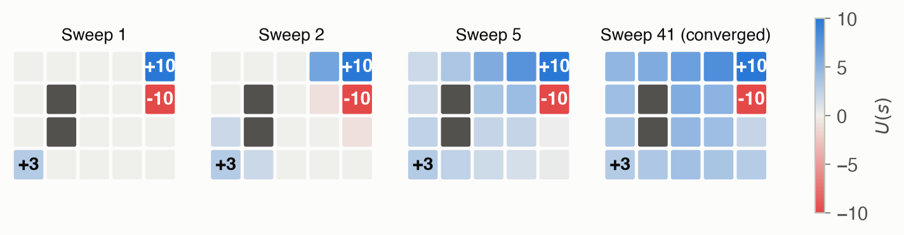
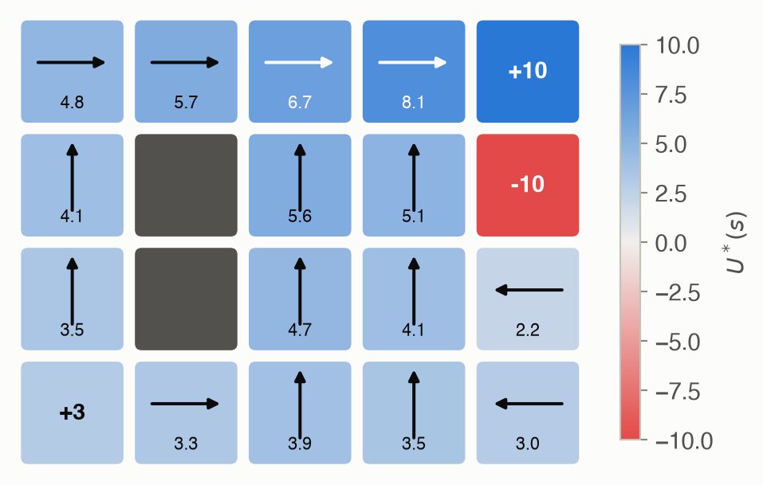
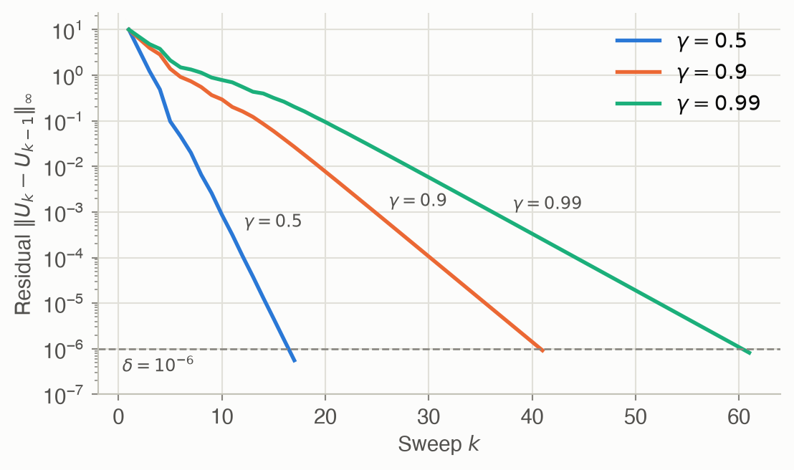
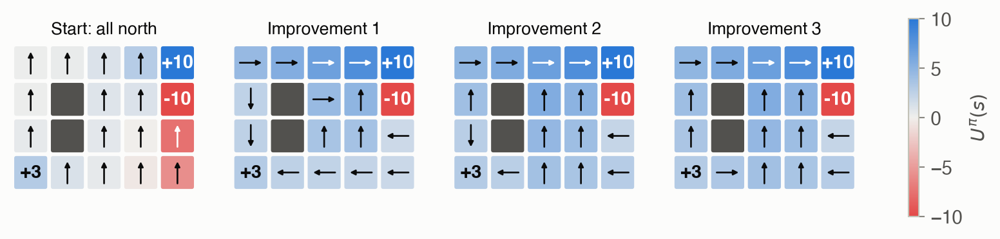

7 · Exact Solution Methods
Part II — Sequential Problems
Big picture
Where this chapter fits
Part I ended with Chapter 6, which chose a single action to maximize expected utility. Most real problems are sequences: each action changes the situation, which changes what the next action should be. Part II (Chapters 7–14) handles such sequential decisions when the current state is always known. This chapter is its foundation: it solves them exactly, assuming the rules of the world are fully known. Every later chapter relaxes something: - huge state spaces (Ch 8, Ch 9); - searching over policies directly (Ch 10–13); - unknown rules that must be learned (Part III); - a hidden state (Part IV, starting at Ch 19).
The question: if you know exactly how the world responds to your actions (with probabilities) and what each outcome is worth, what should you do in every situation to collect the most reward over time?
The short answer: compute what every situation is worth when you act well from it, then in each situation take the action that leads to the best mix of immediate reward and future worth. Policy iteration and value iteration are two ways to compute those worths.
The key ideas at a glance
A Markov decision process (MDP) describes the world. It lists:
- the states (situations) and actions (choices);
- a transition model giving the probability of each next state after each action;
- a reward for each action in each state;
- a discount factor \(\gamma\) (gamma) between 0 and 1, which makes a reward one step later worth \(\gamma\) times as much.
“Markov” means the next state depends only on the current state and action, not on the history.
A policy says what to do; its value says how good that is. A policy picks an action for every state. The value of a state under a policy is the expected total of discounted rewards from following it forever. A useful rule of thumb: \(1/(1-\gamma)\) is roughly how many steps ahead the agent effectively cares about. For \(\gamma = 0.9\) that’s about 10 steps.
A state’s value is reward now plus discounted value next. This self-consistency is the Bellman expectation equation. It turns an infinite sum into a one-step relation, so evaluating a policy means solving one linear system, or repeating the one-step relation until it settles.
Good values give good actions. Given values for every state, the one-step lookahead (the Q-value) of an action is its immediate reward plus the discounted average value of where it leads. Picking the best lookahead in each state is acting greedily.
Policy iteration: evaluate, improve, repeat. Start from any policy. Compute its values exactly, switch every state to its greedy action, and repeat. Each round is at least as good as the last, and after a handful of rounds nothing changes: the policy is optimal.
Value iteration: back up the best lookahead until the values settle. Start with all values 0. Repeatedly replace each state’s value with its best lookahead, a Bellman backup. Good news spreads outward from rewarding states, one step per sweep. Stop when the largest change in one sweep, the Bellman residual, is small enough to guarantee the values are within a chosen accuracy, then act greedily.
Vocabulary
| Term | Plain meaning |
|---|---|
| State, action | A situation; a choice available in it |
| Transition model \(T(s' \mid s, a)\) | Probability of landing in \(s'\) after taking \(a\) in \(s\) |
| Reward \(R(s, a)\) | Expected immediate payoff for taking \(a\) in \(s\) |
| Discount factor \(\gamma\) | How much a reward one step later is worth compared to now |
| Policy \(\pi\) | A rule choosing an action in every state |
| Value \(U(s)\) | Expected discounted total reward from \(s\) onward |
| Q-value \(Q(s, a)\) | Value of taking \(a\) now, then continuing with the given values |
| Greedy | Picking the action with the best one-step lookahead |
| Bellman backup | Replace a state’s value with its best lookahead |
| Bellman residual | The largest change in any state’s value during one sweep |
After this chapter you can
- Write a sequential decision problem as an MDP: arrays of transition probabilities and rewards.
- Compute the value of any policy, by iteration or by one linear solve.
- Find an optimal policy with policy iteration or value iteration, and pick a stopping threshold with a guaranteed accuracy.
- Predict how the discount factor changes what an agent is willing to go after.
Intuition
TipAnalogy
A rover on a grid is looking for rock samples. It knows where the samples are, but its wheels slip: 30% of the time it moves in a direction it didn’t choose.
Imagine every cell holds a sticky note with one number: how much reward can I expect from here if I drive well? At first every note says 0. Then, in every round, each cell looks at its neighbors’ notes and updates its own: “If I head east, I usually land on the cell to my east, sometimes on another neighbor. Averaged over where I land, which direction gives me the best note, after discounting a little because it’s one step later?”
In round 1 only the cells with samples learn anything. In round 2 their neighbors notice. Good news spreads outward one cell per round, fading with distance, like a ripple. Once the notes stop changing, the best move from each cell is simply to head toward the best-looking neighbor.
That ripple is value iteration. Figure 2 shows it on the Rover grid used throughout this page. The top-right sample is worth +10, the crater beside it −10, and the rock at bottom left +3. The two gray cells are walls.

Discounting: later rewards count for less
With \(\gamma = 0.9\), a reward worth 10 now is worth \(0.9 \times 10 = 9\) one step away, and \(0.9^{10} \times 10 \approx 3.5\) ten steps away. That’s why a far reward can lose to a near one. In the Rover grid, a small discount makes the rover settle for the nearby +3 rock, while a large one sends it all the way to the +10 site. Discounting also keeps the total of an endless stream of rewards finite. See Equation 1 and the γ slider.
Evaluating a plan: reward now plus what comes next
A delivery drone that always delivers, even on low battery, earns −6 per step once it’s low, and stays low forever. Its value when low is \(-6\) now plus \(0.9\) times its value when low. Solving \(U = -6 + 0.9\,U\) gives \(U = -60\): \(-6\) per step times an effective horizon of 10 steps. No infinite sum is needed, just a one-step relation that must hold. See Equation 2.
Acting on values: look one step ahead
Suppose you know every cell’s value. In a given cell, for each direction ask: “What do I get now, plus 0.9 times the average value of where I’ll probably land?” Take the direction with the best answer. You don’t need to plan the whole route. The values already summarize everything beyond one step. See Equation 4.
Value iteration: the ripple
That ripple in Figure 2 is value iteration. Each sweep lets every cell look one step further ahead. After sweep \(k\), a cell’s value is the best it can do in \(k\) steps, and sweeps continue until the values stop changing. The number of sweeps needed grows with \(\gamma\): the more the future matters, the further the ripple must travel before it settles. See Equation 7.
Policy iteration: measure the plan, fix every bad move
There is a second, more managerial way to get the same answer. Start with any plan, say “always drive north”. Measure exactly how good that plan is from every cell. Then fix every cell whose move is worse than the best alternative under those measurements. Repeat until no fix helps. That’s policy iteration. On the Rover grid it needs 3 rounds where value iteration needs 41 sweeps, but each round solves a linear system. See Policy iteration in the Formalism.
Knowing when to stop
Value iteration never exactly finishes, so when is it close enough? Watch the biggest change in any cell during a sweep. With \(\gamma = 0.9\), if nothing moved by more than \(0.001\), every value is within \(0.009\) of the true one. The factor \(\gamma/(1-\gamma) = 9\) comes from errors that shrink geometrically. See Equation 8.
Formalism
Markov decision processes
An MDP (ADM §7.1) has:
- a set of states \(\mathcal{S}\) and a set of actions \(\mathcal{A}\);
- a transition model \(T(s' \mid s, a)\), the probability of landing in \(s'\) after taking \(a\) in \(s\);
- a reward function \(R(s, a)\), the expected reward for taking \(a\) in \(s\);
- a discount factor \(\gamma \in [0, 1)\), which makes a reward \(k\) steps away worth \(\gamma^k\) times as much as one received now.
A policy \(\pi\) maps each state to an action. How good is a policy? Follow it from \(s\) forever and add up the rewards, shrinking each by \(\gamma\) for every step of delay:
\[ U^\pi(s) = \mathbb{E}\Big[\, \sum_{t=0}^{\infty} \gamma^t r_t \;\Big|\; s_0 = s,\ a_t = \pi(s_t) \Big] \tag{1}\]
In words. Start in \(s\), follow \(\pi\) forever, and add up the rewards, each one shrunk by \(\gamma\) for every step you had to wait for it. The transitions are random, so average over every way the future could unfold.
Term by term.
- \(r_t\) is the reward received at step \(t\). Here it equals \(R(s_t, \pi(s_t))\).
- \(\gamma^t\) is the discount. With \(\gamma = 0.9\), a reward 10 steps away counts \(0.9^{10} \approx 0.35\) as much as one received now.
- \(\mathbb{E}[\cdot \mid s_0 = s, \ldots]\) averages over the random transitions, given that you start in \(s\) and always act by \(\pi\).
Why discount? With \(\gamma < 1\) the infinite sum is always finite: if every reward is at most \(R_{\max}\), then \(|U^\pi(s)| \le R_{\max}/(1-\gamma)\). A useful rule of thumb is that \(1/(1-\gamma)\) is the effective horizon: about 10 steps for \(\gamma = 0.9\), and about 100 for \(\gamma = 0.99\).
Policy evaluation
Equation 1 is a definition, not a recipe: it has an infinite sum inside an average. The trick that makes it computable is to split off the first step (ADM §7.2).
\[ U^\pi(s) = R(s, \pi(s)) + \gamma \sum_{s'} T(s' \mid s, \pi(s))\, U^\pi(s') \tag{2}\]
In words. What a state is worth under \(\pi\) equals the reward you get right now, plus \(\gamma\) times the average worth of wherever you land next.
Term by term.
- \(R(s, \pi(s))\) is the reward for the action the policy picks in \(s\).
- \(T(s' \mid s, \pi(s))\) is the probability of landing in \(s'\).
- \(\sum_{s'} T(s' \mid s, \pi(s))\, U^\pi(s')\) is the probability-weighted average of the next state’s value: what the future is worth, on average, one step from now.
- \(\gamma\) discounts that future by one step.
Why it holds. In Equation 1, separate the \(t = 0\) term from the rest: \(\sum_{t \ge 0} \gamma^t r_t = r_0 + \gamma \sum_{t \ge 1} \gamma^{t-1} r_t\). The first part averages to \(R(s, \pi(s))\). The second part is \(\gamma\) times the discounted return starting from the next state \(s_1\). Because the process is Markov, the future after \(s_1\) depends only on \(s_1\), so that return averages to \(U^\pi(s_1)\). Averaging over \(s_1 \sim T(\cdot \mid s, \pi(s))\) gives the sum.
Try it. On the drone with “always deliver”, Low only ever returns to Low, so Equation 2 reads \(U(\text{Low}) = -6 + 0.9\, U(\text{Low})\), which gives \(U(\text{Low}) = -60\). That is \(-6\) per step times the effective horizon of 10.
There is one such equation per state, and every one is linear in the unknowns \(U^\pi(s')\). Stack them into vectors and matrices:
\[ \mathbf{U}^\pi = \mathbf{R}^\pi + \gamma \mathbf{T}^\pi \mathbf{U}^\pi \quad\Longrightarrow\quad \mathbf{U}^\pi = (\mathbf{I} - \gamma \mathbf{T}^\pi)^{-1} \mathbf{R}^\pi \tag{3}\]
In words. Policy evaluation is solving one linear system.
Term by term.
- \(\mathbf{U}^\pi\) is the column of values, one entry per state.
- \(\mathbf{R}^\pi\) is the column of rewards \(R(s, \pi(s))\).
- \(\mathbf{T}^\pi\) is the \(|\mathcal{S}| \times |\mathcal{S}|\) matrix with entry \((s, s')\) equal to \(T(s' \mid s, \pi(s))\). Each row sums to 1.
- \((\mathbf{I} - \gamma \mathbf{T}^\pi)\) is always invertible when \(\gamma < 1\), so there is exactly one solution.
There are two ways to solve it:
- Exactly, with one linear solve. This costs about \(O(|\mathcal{S}|^3)\), which is fine for thousands of states and hopeless for billions (the subject of Chapter 8).
- Iteratively: start with \(U = 0\) and keep replacing \(U\) with the right-hand side of Equation 2. Each pass shrinks the largest error by at least a factor \(\gamma\), and each pass costs only \(O(|\mathcal{S}|^2)\).
Acting on a value function
Values are only useful if they tell you what to do. Given any value function \(U\), not necessarily a correct one, ask of each action: “If I take \(a\) once and then collect \(U\), how well do I do?” (ADM §7.3).
\[ Q(s, a) = R(s, a) + \gamma \sum_{s'} T(s' \mid s, a)\, U(s') \tag{4}\]
In words. Try action \(a\) once, then let \(U\) score wherever you land.
Term by term. It is Equation 2 with the policy’s action \(\pi(s)\) replaced by an arbitrary action \(a\), and \(U^\pi\) replaced by any value function \(U\). \(Q\) has one number per (state, action) pair, where \(U\) has one per state.
Acting well then means picking the action with the best lookahead:
\[ \pi(s) = \mathop{\mathrm{arg\,max}}_a Q(s, a) \tag{5}\]
In words. In each state, take the action whose one-step lookahead scores highest. \(\arg\max\) returns the action that attains the maximum, not the maximum value. Ties can be broken any consistent way; the code on this page takes the first.
The advantage \(A(s, a) = Q(s, a) - U(s)\) measures how much better \(a\) is than what \(U\) already expects. The greedy policy picks the action with the largest advantage.
Policy iteration
Policy iteration (ADM §7.4) alternates two steps until the policy stops changing:
- Evaluate the current policy exactly with Equation 3.
- Improve it by acting greedily on those values with Equation 5.
Why it improves. Suppose that in state \(s\) the greedy action beats the current policy’s action under \(U^\pi\). Switching to it, just once, beats sticking with \(\pi\). Switching in every state where it helps, every time you visit, is better still. This is the policy improvement theorem: the greedy policy is at least as good as \(\pi\) in every state.
Why it stops. Each round makes at least one state strictly better, unless the policy is already optimal. There are only \(|\mathcal{A}|^{|\mathcal{S}|}\) policies, so it can’t improve forever.
Value iteration
What does the best possible value function look like? Acting optimally from \(s\) means choosing the best first action and then continuing optimally from wherever you land. This is Bellman’s principle of optimality, and written out it gives:
\[ U^*(s) = \max_a \Big( R(s, a) + \gamma \sum_{s'} T(s' \mid s, a)\, U^*(s') \Big) \tag{6}\]
In words. The best you can do from \(s\) equals the best, over all first actions, of the reward now plus \(\gamma\) times the average best value of where you land.
Compare with Equation 2. It is the same shape, with the fixed action \(\pi(s)\) replaced by a \(\max\) over actions. That \(\max\) makes the equations nonlinear, so there is no single linear solve for \(U^*\). Instead we iterate.
Term by term. The expression inside the parentheses is exactly \(Q(s, a)\) from Equation 4, computed with \(U^*\). So Equation 6 says \(U^*(s) = \max_a Q^*(s, a)\): acting greedily on \(U^*\) reproduces \(U^*\).
Value iteration (ADM §7.5) turns Equation 6 into an update: plug in the current guess on the right, read off a better guess on the left. Repeat for every state in each sweep, starting from \(U_0 = 0\).
\[ U_{k+1}(s) = \max_a \Big( R(s, a) + \gamma \sum_{s'} T(s' \mid s, a)\, U_k(s') \Big) \tag{7}\]
In words. A new estimate of each state’s value is its best one-step lookahead on the old estimates.
What \(U_k\) means. \(U_k(s)\) is the best expected discounted reward achievable in exactly \(k\) steps from \(s\). Sweep 1 sees only immediate rewards, and sweep 2 sees two steps ahead. That is the ripple in Figure 2.
Why it converges. Two value functions that differ by at most \(e\) in every state give lookaheads that differ by at most \(\gamma e\), because the lookahead averages the difference and then multiplies it by \(\gamma\). So each backup shrinks the largest error by a factor \(\gamma\): \(\lVert U_{k+1} - U^* \rVert_\infty \le \gamma \lVert U_k - U^* \rVert_\infty\). In the jargon, the backup is a contraction.
When should it stop? We can’t measure the true error \(\lVert U_{k+1} - U^* \rVert_\infty\), the largest error in any state, because \(U^*\) is unknown. We can measure the Bellman residual \(\lVert U_{k+1} - U_k \rVert_\infty\), the largest change in one sweep. The two are linked:
\[ \lVert U_{k+1} - U_k \rVert_\infty < \delta, \quad \delta = \frac{\epsilon(1-\gamma)}{\gamma} \quad\Longrightarrow\quad \lVert U_{k+1} - U^* \rVert_\infty < \epsilon \tag{8}\]
In words. If no state’s value moved by more than \(\delta\) in the last sweep, then every value is within \(\epsilon\) of the truth.
Term by term.
- \(\lVert U \rVert_\infty = \max_s |U(s)|\), the worst case over states.
- \(\epsilon\) is the accuracy you want.
- \(\delta\) is the threshold that guarantees it. It shrinks as \(\gamma \to 1\), because far-sighted problems hide more error in the long tail of future rewards.
NoteWhy Equation 8 holds
Each backup shrinks the distance to \(U^*\) by a factor \(\gamma\): \(\lVert U_{k+1} - U^* \rVert \le \gamma \lVert U_k - U^* \rVert\). Split the right side with the triangle inequality:
\[ \lVert U_{k+1} - U^* \rVert \le \gamma \big( \lVert U_k - U_{k+1} \rVert + \lVert U_{k+1} - U^* \rVert \big) \]
Collecting the \(\lVert U_{k+1} - U^* \rVert\) terms gives \(\lVert U_{k+1} - U^* \rVert \le \frac{\gamma}{1-\gamma} \lVert U_{k+1} - U_k \rVert\). So a residual below \(\delta\) means an error below \(\frac{\gamma}{1-\gamma}\delta = \epsilon\).
Elsewhere in the chapter
The book also covers asynchronous value iteration, which updates states in place, one at a time (ADM §7.6). It shows that the optimal values are the solution of a linear program (ADM §7.7). And it solves problems with linear dynamics and quadratic rewards in closed form (ADM §7.8). This page will add them later.
Worked example
A delivery drone is either at High or Low battery. In either state it can deliver a package or charge. The discount factor is \(\gamma = 0.9\).
| State | Action | Reward \(R(s, a)\) | Next state |
|---|---|---|---|
| High | deliver | +10 | High 0.6, Low 0.4 |
| High | charge | 0 | High 1.0 |
| Low | deliver | −6 (risky: expected cost of failed flights) | Low 1.0 |
| Low | charge | 0 | High 0.8, Low 0.2 |
In code, the model is two arrays: T[s, a, s′] holds \(T(s' \mid s, a)\) and R[s, a] holds \(R(s, a)\).
# States: 0 = High battery, 1 = Low battery. Actions: 0 = deliver, 1 = charge.
T = np.zeros((2, 2, 2)) # T[s, a, s2] = T(s2 | s, a)
R = np.zeros((2, 2)) # R[s, a]
T[0, 0] = [0.6, 0.4]; R[0, 0] = 10 # High, deliver
T[0, 1] = [1.0, 0.0]; R[0, 1] = 0 # High, charge
T[1, 0] = [0.0, 1.0]; R[1, 0] = -6 # Low, deliver
T[1, 1] = [0.8, 0.2]; R[1, 1] = 0 # Low, charge
gamma = 0.9# States: 1 = High battery, 2 = Low battery. Actions: 1 = deliver, 2 = charge.
# Julia counts from 1, so every index is one more than in Python.
T = zeros(2, 2, 2) # T[s, a, s′] = T(s′ | s, a)
R = zeros(2, 2) # R[s, a]
T[1, 1, :] = [0.6, 0.4]; R[1, 1] = 10 # High, deliver
T[1, 2, :] = [1.0, 0.0]; R[1, 2] = 0 # High, charge
T[2, 1, :] = [0.0, 1.0]; R[2, 1] = -6 # Low, deliver
T[2, 2, :] = [0.8, 0.2]; R[2, 2] = 0 # Low, charge
γ = 0.9Value iteration by hand
Start from \(U_0(\text{High}) = U_0(\text{Low}) = 0\) and apply Equation 7.
Sweep 1. With \(U_0 = 0\), the future is worth nothing, so each state takes its best immediate reward:
- \(U_1(\text{High}) = \max(10 + 0.9 \cdot 0,\; 0 + 0.9 \cdot 0) = 10\) (deliver)
- \(U_1(\text{Low}) = \max(-6 + 0.9 \cdot 0,\; 0 + 0.9 \cdot 0) = 0\) (charge)
Sweep 2. Now the future has value:
- \(U_2(\text{High}) = \max\big(10 + 0.9(0.6 \cdot 10 + 0.4 \cdot 0),\; 0 + 0.9(1.0 \cdot 10)\big) = \max(15.4,\, 9) = 15.4\) (deliver)
- \(U_2(\text{Low}) = \max\big(-6 + 0.9(1.0 \cdot 0),\; 0 + 0.9(0.8 \cdot 10 + 0.2 \cdot 0)\big) = \max(-6,\, 7.2) = 7.2\) (charge)
In sweep 2, Low’s value becomes positive for the first time, because charging now leads somewhere worth reaching. Table 3 continues the computation.
| Sweep \(k\) | \(U_k(\text{High})\) | \(U_k(\text{Low})\) | Greedy in High | Greedy in Low |
|---|---|---|---|---|
| 0 | 0.000 | 0.000 | — | — |
| 1 | 10.000 | 0.000 | deliver | charge |
| 2 | 15.400 | 7.200 | deliver | charge |
| 3 | 20.908 | 12.384 | deliver | charge |
| 4 | 25.749 | 17.283 | deliver | charge |
| 5 | 30.126 | 21.650 | deliver | charge |
| … | … | … | … | … |
| 151 | 69.492 | 61.017 | deliver | charge |
Policy iteration by hand
Start from the reckless policy “always deliver”. Evaluating it with Equation 2 gives two equations:
- Low: \(U(\text{Low}) = -6 + 0.9\, U(\text{Low})\), so \(U(\text{Low}) = -60\).
- High: \(U(\text{High}) = 10 + 0.9\big(0.6\, U(\text{High}) + 0.4 \cdot (-60)\big)\), so \(0.46\, U(\text{High}) = -11.6\) and \(U(\text{High}) \approx -25.22\).
With both values negative, the greedy step prefers charging everywhere. It overcorrects. The next evaluation (all zeros) makes delivering from High attractive again, and after that nothing changes (Table 4).
| Step | \(\pi(\text{High})\) | \(\pi(\text{Low})\) | \(U^\pi(\text{High})\) | \(U^\pi(\text{Low})\) |
|---|---|---|---|---|
| 0 | deliver | deliver | -25.22 | -60.00 |
| 1 | charge | charge | -0.00 | 0.00 |
| 2 | deliver | charge | 69.49 | 61.02 |
Both methods agree: deliver when High, charge when Low, with \(U^*(\text{High}) \approx 69.49\) and \(U^*(\text{Low}) \approx 61.02\). Value iteration took 151 cheap sweeps. Policy iteration took three evaluations, each a small linear solve.
Interactive
Step through value iteration
Drag the slider to run value iteration on the Rover grid one sweep at a time. The arrows show the greedy policy for the current values. Notice that the arrows near the +10 settle within a few sweeps, while the numbers keep creeping up for dozens more.
How far ahead does the rover care?
The discount factor \(\gamma\) sets how much a reward several steps away is worth. Move the slider to change \(\gamma\) and re-solve the Rover grid. At \(\gamma = 0.5\) the whole bottom row settles for the nearby +3 rock. As \(\gamma\) grows, the +10 site pulls in more of the grid. By \(\gamma = 0.9\), even the two cells touching the rock drive away from it.
Algorithms & code
Every function below works on the array encoding from the worked example: T[s, a, s′], R[s, a], and a policy given as one action index per state.
Lookahead and the greedy policy
These implement Equation 4 for all states and actions at once, then Equation 5.
def lookahead(T: Array, R: Array, gamma: float, U: Array) -> Array:
"""Q[s, a] = R(s, a) + gamma * sum_s2 T(s2 | s, a) * U(s2).
Computed for every state s and action a at once.
"""
# T has shape (S, A, S) and U has shape (S,). The @ sums over T's last
# axis, giving an (S, A) array of expected next-state values.
return R + gamma * T @ U
def greedy(T: Array, R: Array, gamma: float, U: Array) -> tuple[Array, Array]:
"""The greedy policy with respect to U, and each greedy action's value."""
Q = lookahead(T, R, gamma, U)
# axis=1 runs over actions: best action (and its value) in each state.
# argmax breaks ties by taking the first action.
return Q.argmax(axis=1), Q.max(axis=1)using LinearAlgebra
# Q[s, a] = R(s, a) + γ Σ_s′ T(s′ | s, a) U(s′), for every s and a.
# A comprehension with two `for` clauses builds a matrix: rows are states, columns actions.
# dot(T[s, a, :], U) is the expected next-state value.
lookahead(T, R, γ, U) = [R[s, a] + γ * dot(T[s, a, :], U) for s in axes(R, 1), a in axes(R, 2)]
# The greedy policy with respect to U, and the value of each greedy action.
function greedy(T, R, γ, U)
Q = lookahead(T, R, γ, U)
# eachrow(Q) is one row per state; the dot applies argmax/maximum to every row.
return argmax.(eachrow(Q)), maximum.(eachrow(Q))
endPolicy evaluation
The iterative version applies Equation 2 until nothing changes. The exact version solves Equation 3.
def policy_matrices(T: Array, R: Array, policy: Array) -> tuple[Array, Array]:
"""T_pi[s, s2] and R_pi[s]: the MDP with the policy's action fixed."""
# Paired indexing: row s of T_pi is T[s, policy[s], :], i.e. each state
# keeps only the transition row of the action the policy picks there.
s = np.arange(len(policy))
return T[s, policy], R[s, policy]
def policy_evaluation_iterative(
T: Array, R: Array, gamma: float, policy: Array,
tol: float = 1e-10, k_max: int = 10_000,
) -> Array:
"""Apply U <- R_pi + gamma * T_pi @ U until U stops changing."""
T_pi, R_pi = policy_matrices(T, R, policy)
U = np.zeros(len(policy))
for _ in range(k_max):
U_next = R_pi + gamma * T_pi @ U
if np.max(np.abs(U_next - U)) < tol:
return U_next
U = U_next
return U
def policy_evaluation_exact(
T: Array, R: Array, gamma: float, policy: Array,
) -> Array:
"""Solve the linear system (I - gamma * T_pi) U = R_pi."""
T_pi, R_pi = policy_matrices(T, R, policy)
return np.linalg.solve(np.eye(len(policy)) - gamma * T_pi, R_pi)# T_π[s, s′] and R_π[s]: the MDP with the policy's action fixed in every state.
function policy_matrices(T, R, policy)
S = eachindex(policy)
# Row s keeps only the transitions of the action the policy picks in s.
T_π = [T[s, policy[s], s′] for s in S, s′ in S]
R_π = [R[s, policy[s]] for s in S]
return T_π, R_π
end
# Apply U ← R_π + γ T_π U until U stops changing.
function policy_evaluation_iterative(T, R, γ, policy; tol=1e-10, k_max=10_000)
T_π, R_π = policy_matrices(T, R, policy)
U = zeros(length(policy))
for _ in 1:k_max
U′ = R_π + γ * T_π * U
maximum(abs.(U′ - U)) < tol && return U′
U = U′
end
return U
end
# Solve the linear system (I - γ T_π) U = R_π.
function policy_evaluation_exact(T, R, γ, policy)
T_π, R_π = policy_matrices(T, R, policy)
# A \ b solves A x = b. I is the identity; it takes whatever size the expression needs.
return (I - γ * T_π) \ R_π
endValue iteration
This applies the Bellman backup, Equation 7, to every state until the residual is below delta. It keeps every iterate so we can plot them.
def value_iteration(
T: Array, R: Array, gamma: float,
delta: float = 1e-6, k_max: int = 10_000,
) -> tuple[Array, list[Array]]:
"""Apply Bellman backups until the Bellman residual is below delta.
Returns the final U and the list of iterates [U_0, U_1, ...].
"""
U = np.zeros(R.shape[0])
history = [U]
for _ in range(k_max):
# Bellman backup: best one-step lookahead on the old estimate.
U_next = lookahead(T, R, gamma, U).max(axis=1)
history.append(U_next)
# Bellman residual: the largest change in any state this sweep.
if np.max(np.abs(U_next - U)) < delta:
break
U = U_next
return history[-1], history# Apply Bellman backups until the Bellman residual is below δ.
# Returns the final U and the vector of iterates [U₀, U₁, ...].
function value_iteration(T, R, γ; δ=1e-6, k_max=10_000)
U = zeros(size(R, 1))
history = [U]
for _ in 1:k_max
# Bellman backup: max over actions (dims=2) of the lookahead; vec turns the S×1 result into a vector.
U′ = vec(maximum(lookahead(T, R, γ, U), dims=2))
push!(history, U′)
maximum(abs.(U′ - U)) < δ && break # Bellman residual below δ: stop
U = U′
end
return history[end], history
endPolicy iteration
def policy_iteration(
T: Array, R: Array, gamma: float, policy: Array, k_max: int = 100,
) -> tuple[Array, Array, list[Array]]:
"""Alternate exact evaluation and greedy improvement until stable.
Returns the final policy, its value, and the list of policies visited.
"""
history = [policy]
U = policy_evaluation_exact(T, R, gamma, policy)
for _ in range(k_max):
improved, _ = greedy(T, R, gamma, U)
# If acting greedily on the policy's own values changes nothing, the
# policy satisfies the Bellman optimality equation: it is optimal.
if np.array_equal(improved, policy):
break
policy = improved
history.append(policy)
U = policy_evaluation_exact(T, R, gamma, policy)
return policy, U, history# Alternate exact evaluation and greedy improvement until the policy stops changing.
# Returns the final policy, its value, and the vector of policies visited.
function policy_iteration(T, R, γ, policy; k_max=100)
history = [policy]
U = policy_evaluation_exact(T, R, γ, policy)
for _ in 1:k_max
improved, _ = greedy(T, R, γ, U)
improved == policy && break # greedy on its own values changes nothing: optimal
policy = improved
push!(history, policy)
U = policy_evaluation_exact(T, R, γ, policy)
end
return policy, U, history
endRun both on the drone
U_star, history = value_iteration(T, R, gamma)
policy, U_pi, policies = policy_iteration(T, R, gamma, np.array([0, 0]))U_star, history = value_iteration(T, R, γ)
policy, U_pi, policies = policy_iteration(T, R, γ, [1, 1]) # start: deliver in both states
@assert policy == [1, 2] # deliver when High, charge when Low
@assert isapprox(U_star, U_pi; atol=1e-4)Value iteration: 151 sweeps, U* = [69.492 61.017]
Policy iteration: 3 evaluations, policy = ['deliver', 'charge'], U = [69.492 61.017]
NoteReading the Julia code (for Python programmers)
- Indices start at 1. State 1 is High and action 1 is deliver, where Python uses 0 for both.
- The dot broadcasts.
abs.(U′ - U)appliesabsto every element, andargmax.(eachrow(Q))appliesargmaxto every row. NumPy does this implicitly; Julia asks you to say so. A \ bsolves the linear system \(A x = b\), likenp.linalg.solve(A, b).Iis the identity matrix fromLinearAlgebra, and it takes whatever size the expression needs.cond && return xis a compact “ifcond, returnx”.- Unicode names such as
γ,T_πandU′are ordinary variable names. Type them in the REPL as\gamma<tab>,T_\pi<tab>andU\prime<tab>.
Results on the Rover grid
Figure 6 shows the converged values and greedy policy at \(\gamma = 0.9\). Cells beside the crater steer away from it even though that costs a step, because a slip toward the crater would be expensive. At this \(\gamma\), the whole grid heads for the +10 site.

Figure 7 compares how fast value iteration converges for three discount factors. The residual shrinks by about a factor \(\gamma\) per sweep, so a far-sighted rover (\(\gamma = 0.99\)) needs many more sweeps than a short-sighted one.

Figure 8 shows policy iteration on the same grid. It starts from “always drive north” and reaches the optimal policy in 3 improvements. Value iteration needed 41 sweeps.

Solved problems
Problem 1: backups by hand. A factory machine is either Working or Broken. Each day you can run it or repair it, with \(\gamma = 0.9\):
| State | Action | Reward | Next state |
|---|---|---|---|
| Working | run | +5 | Working 0.9, Broken 0.1 |
| Working | repair | −1 | Working 1.0 |
| Broken | run | 0 | Broken 1.0 |
| Broken | repair | −4 | Working 0.7, Broken 0.3 |
Starting from \(U_0 = 0\), compute \(U_1\), \(U_2\) and \(U_3\), and the greedy action in Broken after each sweep. What does the answer say about short planning horizons?
TipSolution
Sweep 1. Immediate rewards only: \(U_1(W) = \max(5, -1) = 5\) and \(U_1(B) = \max(0, -4) = 0\). Broken: run.
Sweep 2.
- \(U_2(W) = \max\big(5 + 0.9(0.9 \cdot 5 + 0.1 \cdot 0),\; -1 + 0.9 \cdot 5\big) = \max(9.05,\, 3.5) = 9.05\)
- \(U_2(B) = \max\big(0 + 0.9 \cdot 0,\; -4 + 0.9(0.7 \cdot 5 + 0.3 \cdot 0)\big) = \max(0,\, -0.85) = 0\). Broken: still run.
Sweep 3.
- \(U_3(W) = \max\big(5 + 0.9(0.9 \cdot 9.05 + 0.1 \cdot 0),\; -1 + 0.9 \cdot 9.05\big) = \max(12.33,\, 7.145) = 12.33\)
- \(U_3(B) = \max\big(0,\; -4 + 0.9(0.7 \cdot 9.05 + 0.3 \cdot 0)\big) = \max(0,\, 1.70) = 1.70\). Broken: repair.
\(U_k\) is the best value achievable in \(k\) steps. With only one or two days left, a repair costs more than the working days it buys back, so leaving the machine broken is right. From three days on, repairing pays. Stopping value iteration too early gives a policy that is optimal for the wrong horizon.
Problem 2: exact evaluation. A policy on two states has \(\gamma = 0.5\), rewards \(\mathbf{R}^\pi = (2, 1)\), and transitions: from state 1, stay with probability 0.5 or move to state 2 with probability 0.5; from state 2, stay with probability 1. Find \(U^\pi\) with Equation 3.
TipSolution
State 2 only ever returns to itself: \(U(2) = 1 + 0.5\, U(2)\), so \(U(2) = 2\). Then
\[ U(1) = 2 + 0.5\big(0.5\, U(1) + 0.5 \cdot 2\big) = 2.5 + 0.25\, U(1) \quad\Rightarrow\quad U(1) = \tfrac{2.5}{0.75} = \tfrac{10}{3} \approx 3.33. \]
In matrix form, \((\mathbf{I} - 0.5\,\mathbf{T}^\pi) = \begin{pmatrix} 0.75 & -0.25 \\ 0 & 0.5 \end{pmatrix}\), and solving against \((2, 1)\) gives the same \((10/3, 2)\). The matrix is upper triangular because state 2 never returns to state 1, so back-substitution is all you need.
Problem 3: choosing the stopping threshold. You want value iteration’s answer to be within \(\epsilon = 0.1\) of \(U^*\) in every state. What residual threshold \(\delta\) guarantees this for \(\gamma = 0.9\), and for \(\gamma = 0.99\)? Why is the second so much smaller?
TipSolution
From Equation 8, \(\delta = \epsilon(1 - \gamma)/\gamma\):
- \(\gamma = 0.9\): \(\delta = 0.1 \times 0.1 / 0.9 \approx 0.0111\)
- \(\gamma = 0.99\): \(\delta = 0.1 \times 0.01 / 0.99 \approx 0.00101\)
With \(\gamma\) near 1, the rewards still to come beyond the current horizon are large. A tiny change in one sweep can still hide a big total error, because that change keeps compounding over many future steps. So the threshold has to be about ten times tighter, and since each sweep only shrinks the error by a factor \(\gamma\), it also takes many more sweeps (Figure 7).
Problem 4: when is the far reward worth it? Remove the slip, so moves are deterministic. From some cell, the +3 rock is 2 moves away and the +10 site is 5 moves away. A reward collected after \(d\) moves is worth \(\gamma^d\) times its face value. For which \(\gamma\) should the rover go for the +10?
TipSolution
Go for the +10 when \(10\gamma^5 > 3\gamma^2\). Dividing by \(\gamma^2\) gives \(\gamma^3 > 0.3\), so
\[ \gamma > 0.3^{1/3} \approx 0.669. \]
Only the difference in distance (3 moves) matters, and the ratio of rewards. With slip, the risk along each route matters too, so there’s no simple formula. The γ slider above shows where the switch happens on the Rover grid.
Recap
The key points of this chapter, and why each matters beyond it:
- An MDP packs a sequential decision problem into five pieces: \(\mathcal{S}, \mathcal{A}, T, R, \gamma\). Why it matters: this is the common language of the rest of the book. Part II keeps the model and scales up the solution methods. Part III has to learn \(T\) and \(R\) from experience. Part IV hides the state behind noisy observations.
- A policy’s value is its expected discounted return (Equation 1), and \(\gamma\) sets the effective horizon, about \(1/(1-\gamma)\) steps. Why it matters: \(\gamma\) is a modeling choice with real consequences for behavior. The γ slider showed the same rover taking the modest nearby reward or holding out for the big distant one.
- The Bellman expectation equation (Equation 2) turns an infinite sum into a one-step recursion, and evaluating a policy becomes one linear solve. Why it matters: “reward now plus discounted value of what comes next” is the engine inside almost every algorithm ahead, including temporal-difference learning and Q-learning (Ch 17) and actor-critic methods (Ch 13).
- Good values give good actions: act greedily on the one-step lookahead \(Q\) (Equation 4, Equation 5). Why it matters: it separates judging states from choosing actions. Later methods learn \(U\) or \(Q\) and derive the policy from it, or use the advantage \(Q - U\) to steer a policy directly (Ch 11–13).
- The Bellman optimality equation (Equation 6) characterizes the best policy. Value iteration solves it by repeated backups, which converge because each one shrinks the error by a factor \(\gamma\). The residual rule (Equation 8) says when to stop. Why it matters: value iteration is the template for approximate value iteration (Ch 8) and for planning over beliefs (Ch 20).
- Policy iteration takes few, expensive rounds, and value iteration takes many cheap sweeps. Both need the full model and touch every state. Why it matters: those two requirements fail for large or unknown problems. That failure motivates most of the book: approximation (Ch 8), planning only from the current state (Ch 9), and learning from experience (Ch 16–17).
Cheat sheet & connections
| Name | Formula | Ref | Cost per iteration |
|---|---|---|---|
| Value of a policy | \(U^\pi(s) = \mathbb{E}\big[\sum_t \gamma^t r_t \mid s_0 = s\big]\) | Equation 1 | — |
| ★ Bellman expectation equation | \(U^\pi(s) = R(s,\pi(s)) + \gamma \sum_{s'} T(s' \mid s,\pi(s))\, U^\pi(s')\) | Equation 2 | \(O(\lvert\mathcal{S}\rvert^2)\) per sweep |
| Matrix form (exact evaluation) | \(\mathbf{U}^\pi = (\mathbf{I} - \gamma \mathbf{T}^\pi)^{-1} \mathbf{R}^\pi\) | Equation 3 | \(O(\lvert\mathcal{S}\rvert^3)\) |
| ★ Q-function (lookahead) | \(Q(s,a) = R(s,a) + \gamma \sum_{s'} T(s' \mid s,a)\, U(s')\) | Equation 4 | \(O(\lvert\mathcal{S}\rvert^2 \lvert\mathcal{A}\rvert)\) |
| Greedy policy | \(\pi(s) = \arg\max_a Q(s,a)\) | Equation 5 | \(O(\lvert\mathcal{S}\rvert \lvert\mathcal{A}\rvert)\) given \(Q\) |
| ★ Bellman optimality equation | \(U^*(s) = \max_a Q^*(s,a)\) | Equation 6 | — |
| ★ Bellman backup | \(U_{k+1}(s) = \max_a \big(R(s,a) + \gamma \sum_{s'} T(s' \mid s,a)\, U_k(s')\big)\) | Equation 7 | \(O(\lvert\mathcal{S}\rvert^2 \lvert\mathcal{A}\rvert)\) |
| Residual stopping rule | \(\lVert U_{k+1} - U_k \rVert_\infty < \epsilon(1-\gamma)/\gamma\) | Equation 8 | \(O(\lvert\mathcal{S}\rvert)\) |
Policy iteration or value iteration? Policy iteration takes few, expensive iterations (a linear solve each). Value iteration takes many cheap sweeps and slows down as \(\gamma \to 1\). For small problems, either works.
Common pitfalls
- Stopping value iteration when the policy stops changing. The greedy policy often settles early, but nothing guarantees it is final. Problem 1 shows it can still flip. Stop on the residual (Equation 8).
- Using \(\gamma = 1\) on a problem that never ends. The sums in Equation 2 can diverge. With \(\gamma = 1\), every policy must reach an absorbing state with zero reward.
- Forgetting terminal states. In the Rover grid, collecting a reward moves the rover to an absorbing “done” state. Without it, the rover would collect the same reward forever.
- Mixing up
T[s, a, s′]index order between code and math. Write the convention next to the array, as in the worked example.
Connections
- Ch 6 · Simple Decisions is the one-step case: choose the action with maximum expected utility.
- Ch 8 · Approximate Value Functions handles state spaces too large to store \(U\) as a table.
- Ch 9 · Online Planning applies lookahead from the current state only, instead of solving for every state.
- Ch 16 · Model-Based Methods learns \(T\) and \(R\) from experience, then uses the methods on this page.
- Ch 20 · Exact Belief State Planning runs value iteration over beliefs when the state isn’t observed.
- Appendix A · Mathematical Concepts shows why value iteration converges: the Bellman backup is a contraction. Appendix E · Search Algorithms covers the deterministic special case.